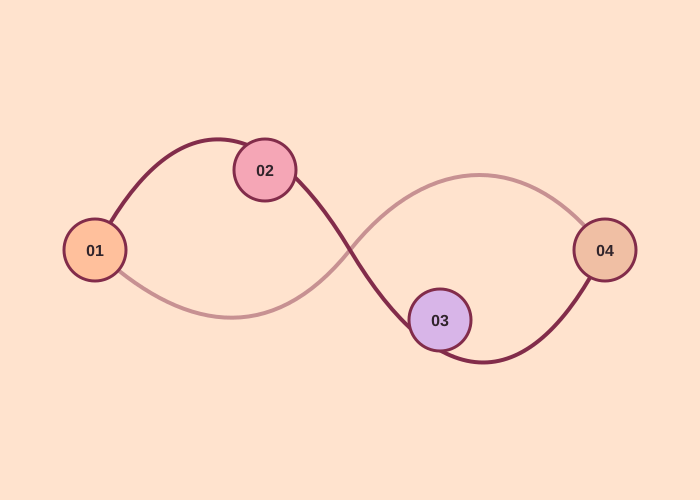

Renata Abaroa ✳
How this website was made & sources

How this website was made
Instead of answering the questions one by one, I organized the site as a story: what AI is, where it helps, what goes wrong, and what might come next. Fact, My take, and Prediction tags separate sourced information from my views.
Visually, I used an editorial layout with oversized Fraunces headlines, generous space, and a warm coral, peach, and lilac palette. Diagrams explain input, logic, and output; flip cards reveal the real-world risk examples.
I built it with ChatGPT. Separate HTML sections structure the page, CSS variables control the colors, and JavaScript flips the cards and fades in elements as I scroll. After testing the site, I increased the smaller body text and made the fact cards taller so they are easier to read on narrow screens. I checked every fact against the linked sources and removed anything I couldn't confirm.
I acknowledge the use of Claude to revise and help organize the text, and ChatGPT to generate and revise the code for the website. I checked the facts against the linked sources, edited the content, and tested the site. The final work is my responsibility.